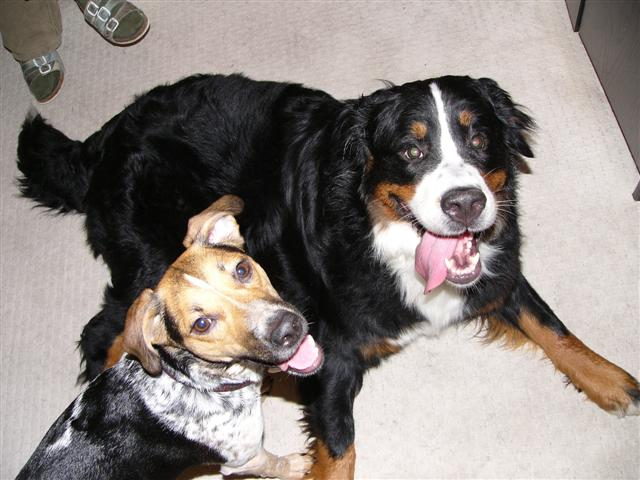
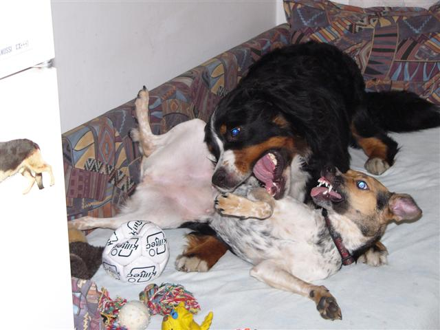
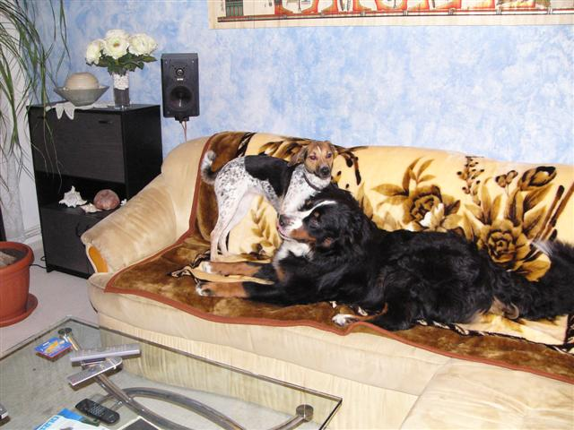
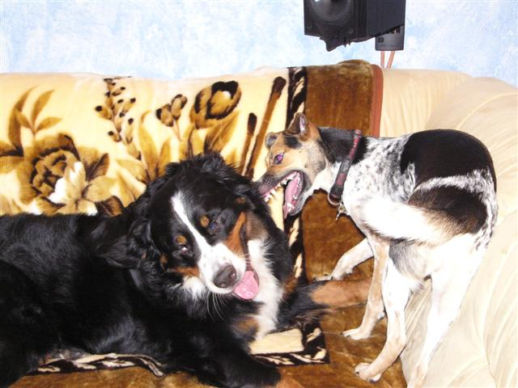
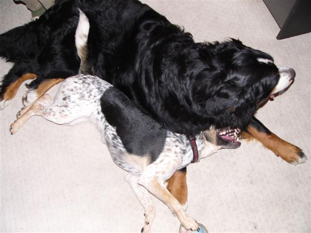
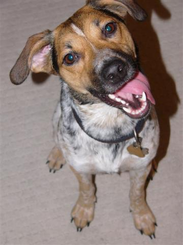

Navigace |
Návštěva u Grimmy - likvidační četaZ nadpisu by se mohlo zdát, že došlo k značným materiálním škodám či újmě na zdraví, ale nebojte se. Možná by to šlo nazvat i Nelino strakaté zabydlovací komando:-)  Každopádně chcete-li mít doma doma útulno a klid, tak raději nezvěte mladou strakatou dračici na návštěvu. Naštěstí Lenka - panička Grimmy Vita Canis, fešné bernské salšnické psice - je psí máma, která má tolik odvahy, že pozve i nás s Nelou a nechá si válcovat byt:-)
 Uvítání na válendě - potažmo Grimmině pelíšku. Je to sice zubatá fotka, ale musím upozornit, že v tom nebylo nic ve zlém, prostě obvyklé škádlení:-)
 Následoval přesun na pohovku, je přece jen o něco měkčí než válenda:-) Navíc se dá bezvadně narážet do skleněného stolku (pozn:vydržel), případně do páníčků, kteří se pokusí si taky sednout.
 Taktický přesun do rohu pohovky.  To už byly unavené obě, sklouzly na koberec a občas se ňuchaly vleže. Nela se obvykle zasouvá pod Grimmu a provokuje k dalším hrátkám.
 Spokojenej pes:-) Nele se návštěva moc líbila, protože po třech hodinách bytovvých bitek následovalo ještě protažení při na trávnících před Hvězdou. To se tak někdo má, když má vyvážený tréninkový program. Snad si to brzy zopakujeme, tím spíš, že Grimma je vzorně vychovaná a my doufáme, že se od ní Nela něco přiučí:-)
|